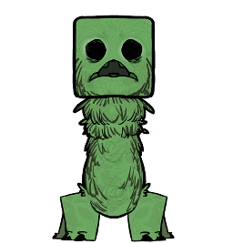

苦力怕Creeper
从方块世界入侵而来的怪物！到底是谁把它放到永恒大陆的？！
生命值
100
爆炸伤害
100
攻击半径
5
索敌半径
10
跑速
5
疯狂光环
-50/分钟
掉落物
火药 ×2 ~ 5
自爆死亡减半
？？？：你们说部长还会觉得自己缺火药吗……噗哈哈ww
技能详情
？？？：爱丽丝知道！这个魔物会追着人跑，然后“磅！！”的一下爆炸！
- ① 锁定：只主动仇恨玩家，索敌半径 10 单位距离
- ② 贴脸：追到目标 2 单位距离以内，才会开始点火
- ③ 引信：点火后身体会红白闪烁，约 0.9 秒后引爆
- ④ 中止：只要目标跑出 5 单位距离的爆炸半径，它就会取消自爆，重新追上来再点一次
| 爆炸效果 | 数值 | 说明 |
|---|---|---|
| 对玩家伤害 | 100 | 范围内的玩家都会吃到 |
| 对其他生物伤害 | 250 | 玩家的 2.5 倍 |
| 扣除理智 | 30 | 只对吃到爆炸的玩家生效 |
| 爆炸半径 | 5 | 也是取消自爆的判定半径 |
| 击飞 | 半径 3 | 越靠近爆心飞得越远；免疫击飞的目标不受影响 |
可以在MOD设置中「苦力怕破坏建筑」：调整苦力怕是否摧毁建筑物。
刷新方式
苦力怕不会自己在地图上生成，它只在猎犬袭击期间跟着一起来：袭击开始时，围绕每一个被袭击的玩家各刷一批，落在该玩家周围 10 单位内的随机可站立位置。
刷出来的苦力怕会像猎犬一样淡入现身，并且一落地就被指派给那位玩家——所以你听到狗叫的时候，身边可能已经站着几只了。
| 游戏天数 | 每波数量 |
|---|---|
| 1 – 9 天 | 1 – 2 只 |
| 10 – 24 天 | 1 – 2 只 |
| 25 – 49 天 | 2 – 3 只 |
| 50 – 99 天 | 2 – 4 只 |
| 100 天及以后 | 3 – 5 只 |
和猎犬的关系：猎犬不会主动攻击苦力怕——你也不想看见苦力怕冲过去炸死猎犬的吧...？
只有真正的猎犬袭击才会带苦力怕：猎犬丘自己刷的狗、猎犬口哨吹出来的狗都不会生成苦力怕。
行为习性
- 只盯着玩家：主动索敌只认玩家，对野牛、猪人这些一概不理——除非你先动手。
- 不会普通攻击：没有近战伤害，贴上来就是为了炸。被它追着跑时不用怕被咬。
- 挨打会还手：被谁打了就把谁设成目标，所以远程偷袭之后它会直接朝你冲过来。
- 没目标时原地打转：围着自己的生成点徘徊，范围约 32 单位距离，不会满地图乱逛。
- 怕猫：察觉到 10 单位距离内的猫类生物就会掉头逃跑，跑到 16 单位距离外才会停止。
- 可燃也可冻：和大多数中型生物一样，能被点着，也能被冻住。
你知道吗
- MC生物在《饥荒联机版》当中也一样怕船！